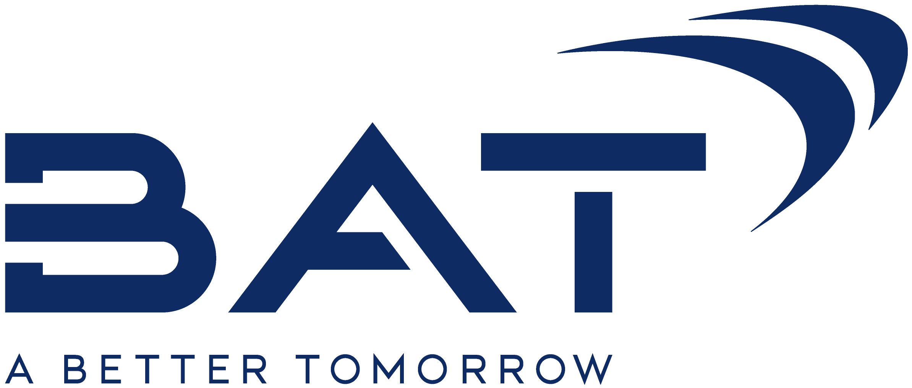

VOLUME
—
—
NET REVENUE
—
—
NUMERIC DISTRIBUTION
—
—
STRIKE RATE
—
—
VOLUME VS TARGET — TRAILING 12 MONTHS
REVENUE BY CHANNEL — SAR M
ANALYST NOTE
—
// DECISION INTELLIGENCE
Data, business, and AI — I find the story in the numbers, the levers in the operation, and build the intelligent tools that connect them.
Five interactive showcases, rebuilt in the browser with synthetic data — each one solving a different analytical job.
Regional performance at a glance — variance vs last year, target tracking, and an insight engine that rewrites the executive summary for every filter you touch.
VOLUME
—
—
NET REVENUE
—
—
NUMERIC DISTRIBUTION
—
—
STRIKE RATE
—
—
VOLUME VS TARGET — TRAILING 12 MONTHS
REVENUE BY CHANNEL — SAR M
ANALYST NOTE
—
A trade-analytics dashboard rebuilt from scratch for the web — KPI variance vs last year, target tracking, channel mix, and an insight engine that rewrites the executive summary for every filter.
The whole year in one picture: this year's sales on top of last year's, month by month — and one sentence, written from the numbers, that says what it means.
MONTHLY SALES — SAR M
THE ANSWER
—
The first question every leader asks — are we ahead or behind? — answered in the first second, with the sentence underneath written from the numbers, not by a person.
A what-if simulator with three levers. Move them and watch the 12-month forecast, revenue, and margin re-plan themselves in real time — elasticity included.
REVENUE FORECAST — NEXT 12 MONTHS, SAR M
Δ VOLUME
±0.0%
vs base plan
Δ REVENUE — 12M
SAR +0M
vs base plan
MARGIN IMPACT
+0.0 pts
gross margin
Planning conversations go in circles until someone can show the trade-off. This is that tool — the cost of a price move, the payoff of a distribution push, recalculated as you drag.
A budget-to-actual waterfall that decomposes the variance into its drivers — and writes the one-line story leadership actually reads. Switch quarters to watch the narrative change.
THE STORY
—
Finance storytelling from the consulting playbook: don't show the variance, explain it — volume, price, mix, and FX, each carrying its share of the story.
Pick a brand: its sales, its growth, and where it lands by year-end on the current pace — with every product under it ranked from hero to problem child.
SALES SO FAR
—
year to date
VS LAST YEAR
—
same period
YEAR-END ESTIMATE
—
on current pace
THE READ
—
One brand at a time: the headline numbers, where it lands by December, and which products are carrying it or dragging it — with the takeaway written from the data.
Dashboards show the numbers — these apps do the work. Purpose-built programs that take a process people grind through by hand and finish it in minutes, the same way every time.
READY
— REPORT OUTPUT —
generate to see today's report land here
IDLE — 10 ROUTES TRACKED
— ROUTE LEAGUE TABLE —
analyze to score every route on the street
IDLE — 214 SKUS · 6 BRANDS
— PORTFOLIO REPORT —
compile to see brand & SKU performance
A·01
Feed it the raw exports — it cleans, reconciles, and returns the finished daily report, formatted and ready to send.
IMPACT // 4 HRS → 15 MIN, EVERY DAY
A·02
Scores every sales route on visits, success rate, and order size — then ranks who's winning the street and who needs help.
IMPACT // EVERY ROUTE SCORED, WEAK LINKS VISIBLE
A·03
Compiles raw sales into brand and SKU league tables — share, growth, rank moves, and the tail that needs pruning.
IMPACT // 214 SKUS → ONE PAGE THAT MATTERS
What they deliver is the point. How they're built is the craft.
01
Star schemas, 50+ DAX measures per model, and performance-tuned Power BI datasets built for scale.
02
Reading the operation behind the numbers — variance, coverage, pricing and promo economics, and the levers that actually move them.
03
Intelligent automation that compresses hours of reporting into minutes — raw data in, finished output out, end to end.
04
Design systems, animation, and interactive data experiences — this site is the live demo.
05
The discipline that ties the other four together — Partner-commended storytelling that turns models, analysis, and automation into decisions leadership can act on in one read.
Twelve certifications across AI, analytics, and business practice — Harvard, Wharton, Microsoft, Google, Palantir, NVIDIA, IBM, KPMG, CFI, and Scrum.org.
Business Analytics Program
HARVARD BUSINESS ANALYTICS
✓ VERIFIED · 2025
Business Intelligence & Data Analyst
BIDA® · CORPORATE FINANCE INSTITUTE
… IN PROGRESS · 2026
Power BI Data Analyst
MICROSOFT CERTIFICATION
✓ VERIFIED · 2025
Foundry / AIP Certification
FOUNDRY · AIP
… IN PROGRESS · 2026
AI Professional Certificate
GOOGLE CAREER CERTIFICATES
… IN PROGRESS · 2026
AI Foundations Certification
IBM CERTIFIED
… IN PROGRESS · 2026
AI Business Professional
MICROSOFT CERTIFIED
… IN PROGRESS · 2026
Accelerated Data Science
NVIDIA DLI CERTIFICATION
… IN PROGRESS · 2026
Business Foundations Program
THE WHARTON SCHOOL
✓ VERIFIED · 2025
Target Operating Model
KPMG CERTIFICATION
✓ VERIFIED · 2025
Cloud Fundamentals
KPMG CERTIFICATION
✓ VERIFIED · 2025
Professional Scrum Master I
PSM I · SCRUM.ORG
✓ VERIFIED · 2025

2025 — PRESENT
British American Tobacco — Saudi Arabia

2025
KPMG